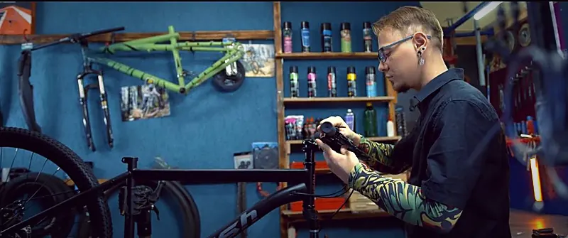
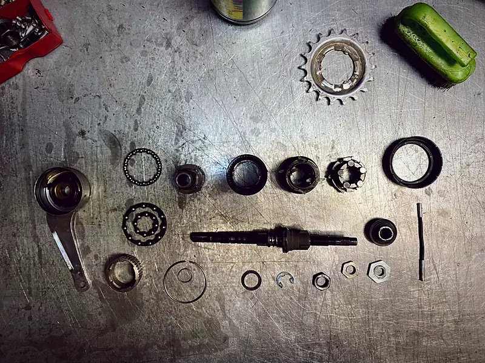
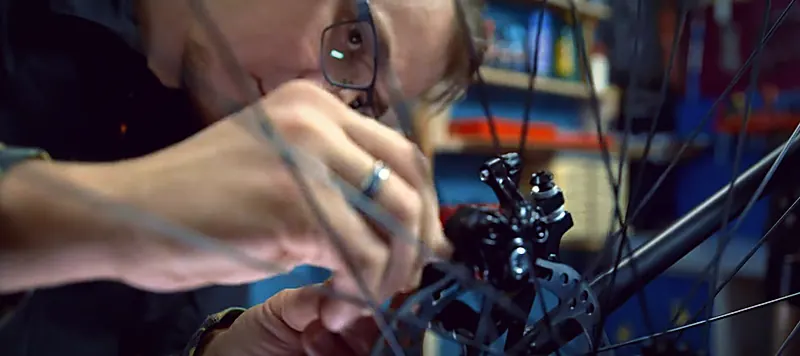
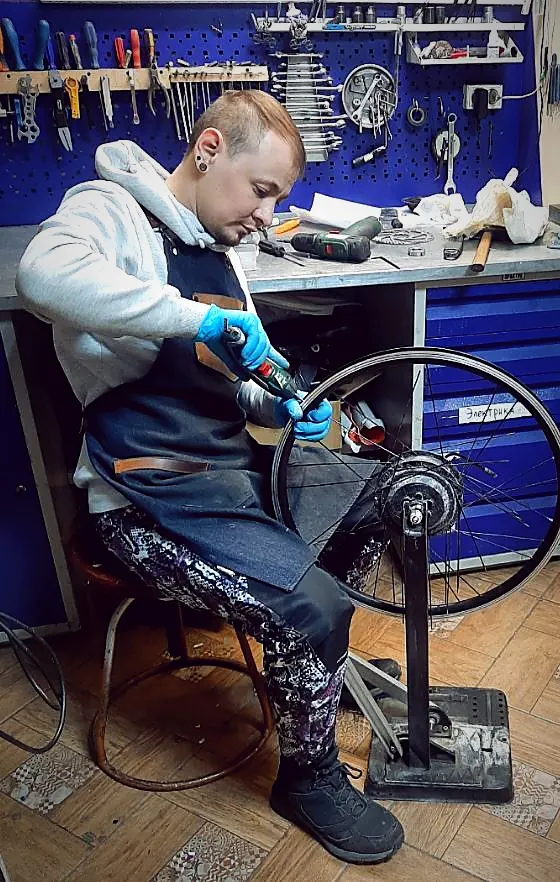
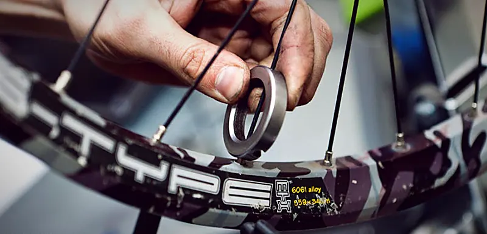
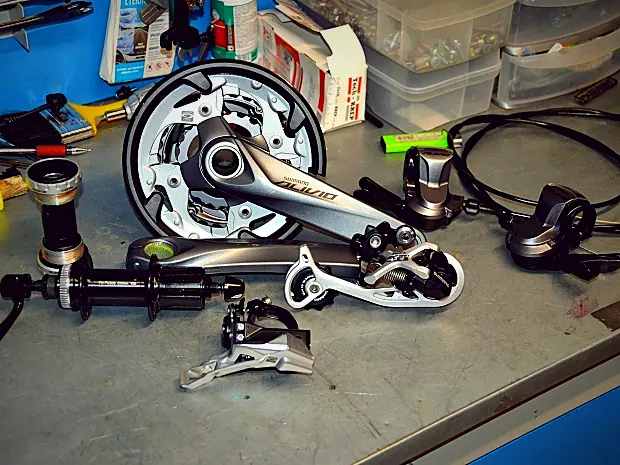
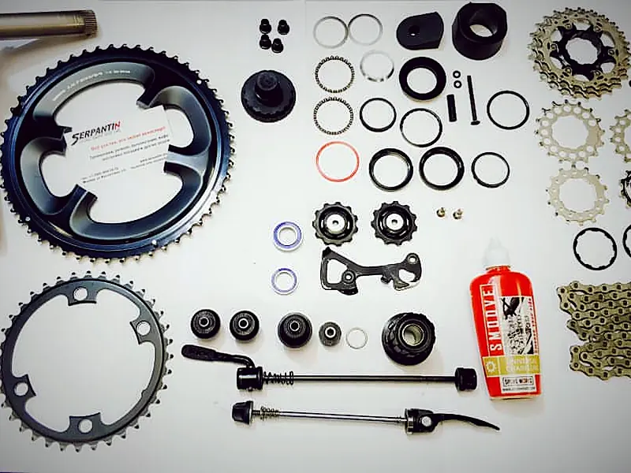

Express ТО
3 500 ₽
- Чистка цепи
- Протяжка спиц (переднее, заднее колесо)
- Регулировка скоростей
- Регулировка тормозов
- Шиномонтаж, балансировка

Велосервис · Новосибирск
Приемлемые цены, гарантия качества ремонта и большой выбор запчастей. Бесплатно проконсультируем по обслуживанию вашего байка.
Как мы работаем
Больше видео в группе ВКонтакте.
Предварительная цена определяется после диагностики и зависит от сложности работ.
Такой работы в прайсе нет. Позвоните мастеру, подскажем.






Ревизия каретки, рулевого стакана и втулок, чистка трансмиссии и переключателей, чистка и смазка линий переключения и тормозов, протяжка спиц, регулировка скоростей и тормозов, шиномонтаж с балансировкой и протяжка навесных элементов. Цена 7 300 ₽.
Заклейка одного прокола 350 ₽, шиномонтаж с заменой камеры 350 ₽.
Правка биения: слабая и средняя 500 ₽, сильная 800 ₽. Протяжка спиц одного колеса 550 ₽.
На одну сторону: 750 ₽ для минерального масла и 600 ₽ для DOT.
Да. Сборка и настройка обычного велосипеда из коробки 2 500 ₽, электровелосипеда 5 500 ₽.
Эластомерная вилка 1 100 ₽, пружинно-масляная от 2 200 ₽, воздушно-масляная от 6 000 ₽.
Новосибирск, Вокзальная магистраль, 3, цоколь, въезд со двора. Ежедневно с 11:00 до 20:00, кроме воскресенья.